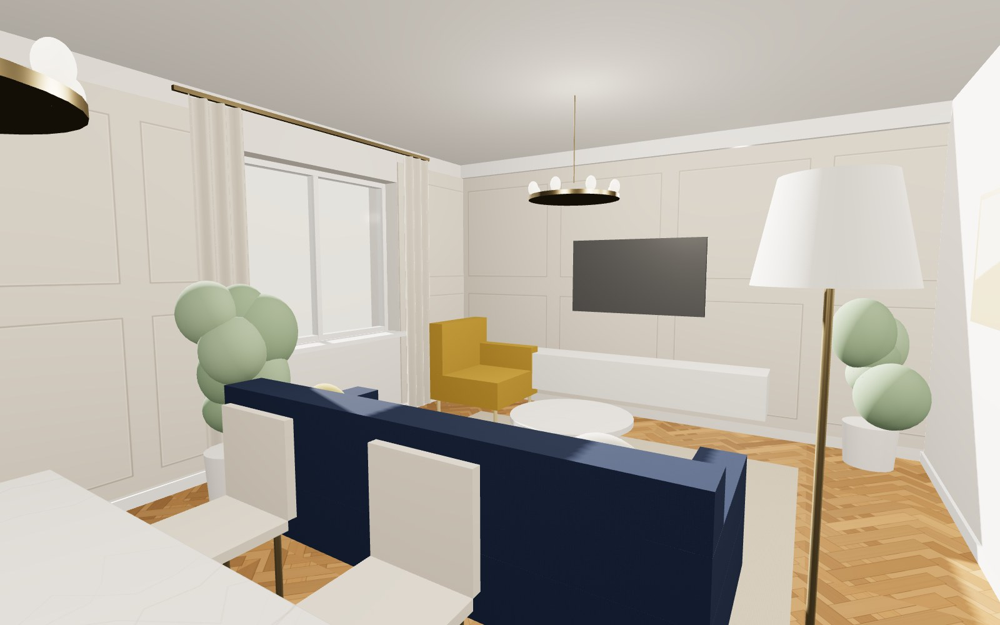
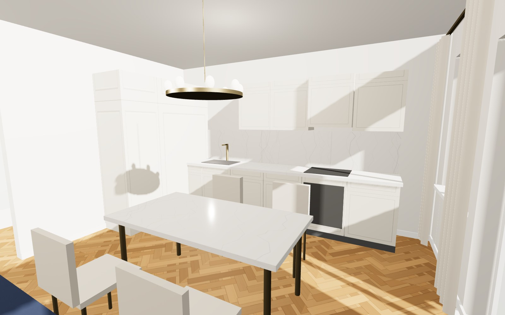
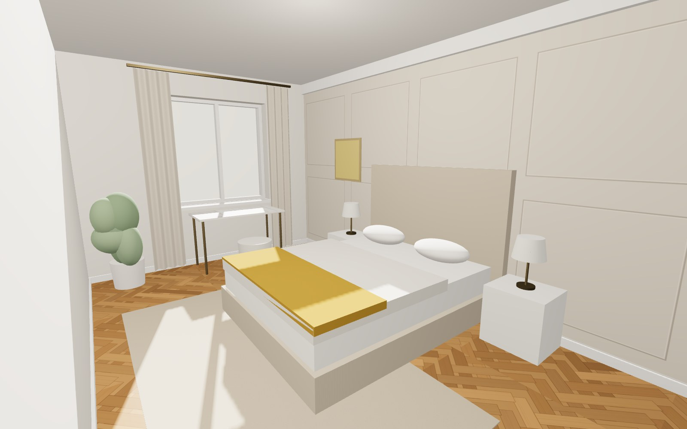
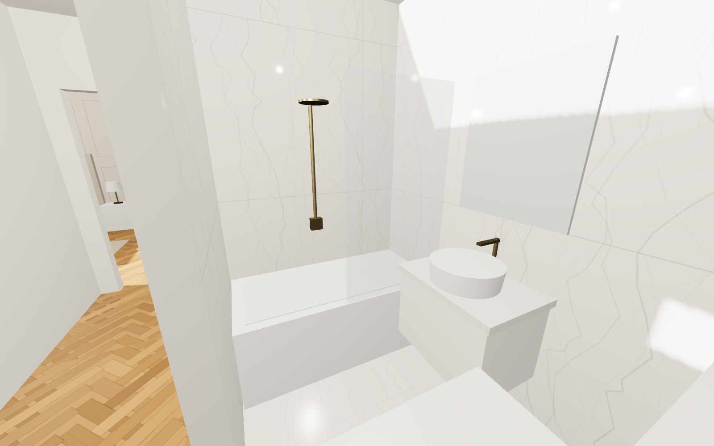
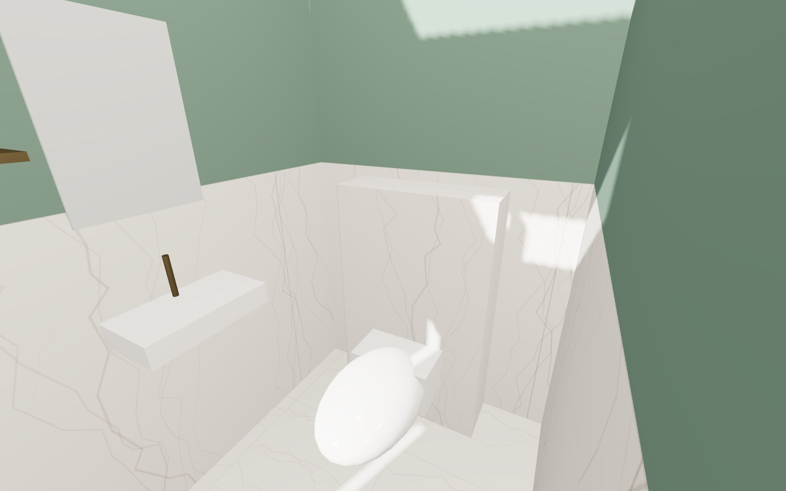
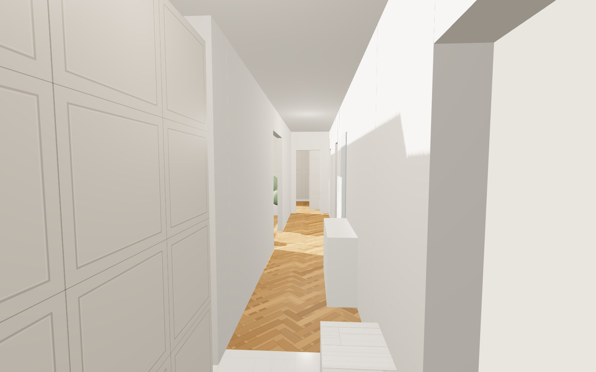

Вариант 2 из 3
Неоклассика
Молдинги на стенах, паркет ёлочкой, мрамор в ванной и латунь. Спокойная классика без вычурности: глубокий синий диван и горчичный акцент.

3D-модель
Пройдитесь по квартире
Модель построена по размерам из выписки. Крутите мышкой или пальцем, колёсико - приблизить. Кнопки переносят в нужную комнату.
Интерьеры
По комнатам





Цвета и материалы
Палитра
Паркет ёлочкойдуб, тёплый тон
Грейжстены с молдингами
Глубокий синийдиван, бархат
Горчичныйкресло, плед
Латуньсмесители, люстры, ножки мебели
Что покупаем
Отделка, мебель, сантехника
Отделка
- Пол: паркет ёлочкой, дуб, планка 9×60 см
- Стены: краска цвета грейж + молдинги (рамки) из полиуретана, окрашенные в цвет стен
- Потолок: белый с карнизом
- Прихожая: керамогранит под мрамор 60×60
- Двери: белые филёнчатые, высота 2,1 м
Кухня
- Фасады с рамкой (шейкер), светлый тёплый бежевый, латунные ручки
- Столешница и фартук: искусственный камень или керамогранит под мрамор
- Верхние шкафы до высоты 2,25 м, вытяжка встроена
- Колонна у входа: холодильник и духовка
- Мойка и варочная панель - на местах по плану
Мебель
- Диван 240 см, бархат глубокого синего цвета, латунные ножки
- Кресло горчичного цвета у окна
- Обеденный стол со столешницей под мрамор, стулья в светлой обивке
- Кровать 160×200 с высоким мягким изголовьем
- Тумбы и шкафы - светлые, с рамочными фасадами
Сантехника
- Ванна акриловая 150×70
- Тумба с каменной столешницей и накладной раковиной
- Смесители, душевая лейка, полотенцесушитель - латунь
- Туалет: подвесной унитаз на инсталляции, мини-раковина 40 см
- Стиральная машина в ванной
Плитка
- Ванная: керамогранит под мрамор Калакатта 60×120, на стены и пол
- Туалет: тот же мрамор до 1,2 м, выше - тёмно-зелёная краска
- Фартук кухни: слэб или крупная плитка под мрамор
- Прихожая: под мрамор 60×60
Свет
- Кольцевые люстры с латунью над столом и в гостиной
- Торшер с латунной ножкой
- Настольные лампы с тканевыми абажурами в спальне
- Свет 2700 K, диммеры в гостиной и спальне
Это эскизная 3D-модель - она показывает стиль, цвета, расстановку и размеры. Для фотореалистичных картинок следующий шаг - рендер этой же квартиры в профессиональной программе с настоящими материалами и светом.